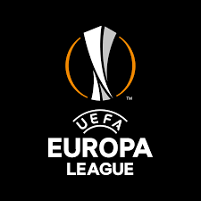
CALENDRIER/RESULTATS
PHASE DE QUALIFICATION
PHASE DE GROUPES
PHASE FINALE
CLASSEMENTS
BUTEURS
PASSEURS
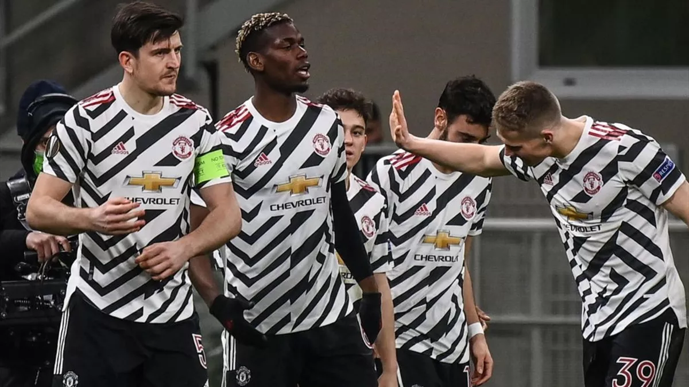
LIGUE EUROPA : AJAX AMSTERDAM - AS ROME EN AFFICHE, MANCHESTER UNITED OPPOSÉ À GRENADE
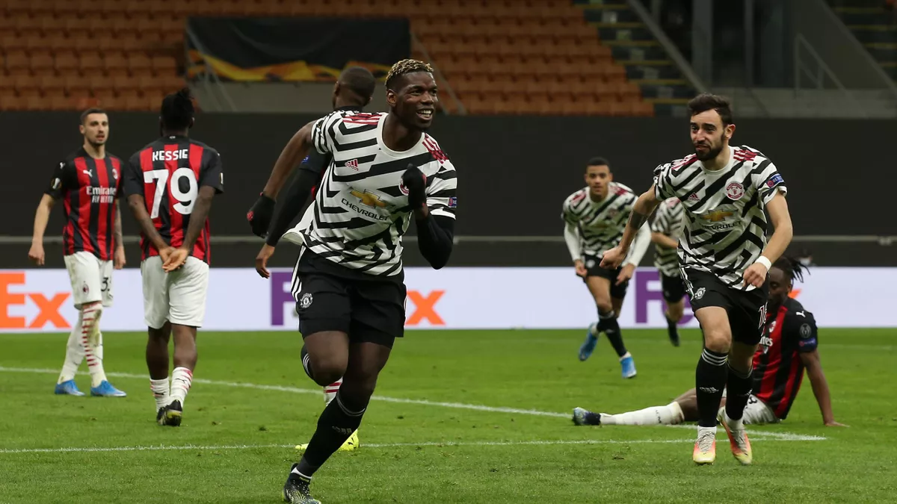POUR SON RETOUR, PAUL POGBA OFFRE LA QUALIFICATION À MANCHESTER CONTRE MILAN
POGBA DE RETOUR ET FAIT QUALIFIER MAN UNITED...
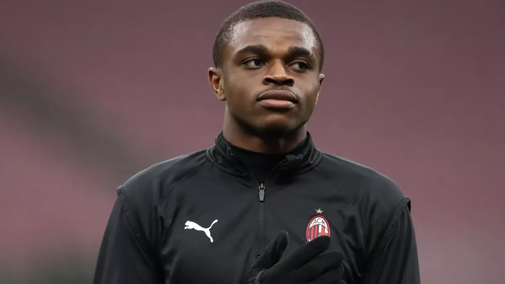EXCLU EUROSPORT - PIERRE KALULU (AC MILAN) : "AVEC ZLATAN, TU NE PEUX PAS ÊTRE TRANQUILLE"
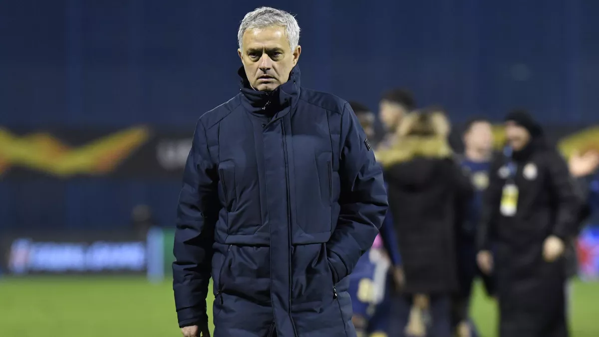DINAMO ZAGREB - TOTTENHAM (3-0) : JOSÉ MOURINHO, "PROFONDÉMENT BLESSÉ" PAR L'ATTITUDE DE SES SPURS...
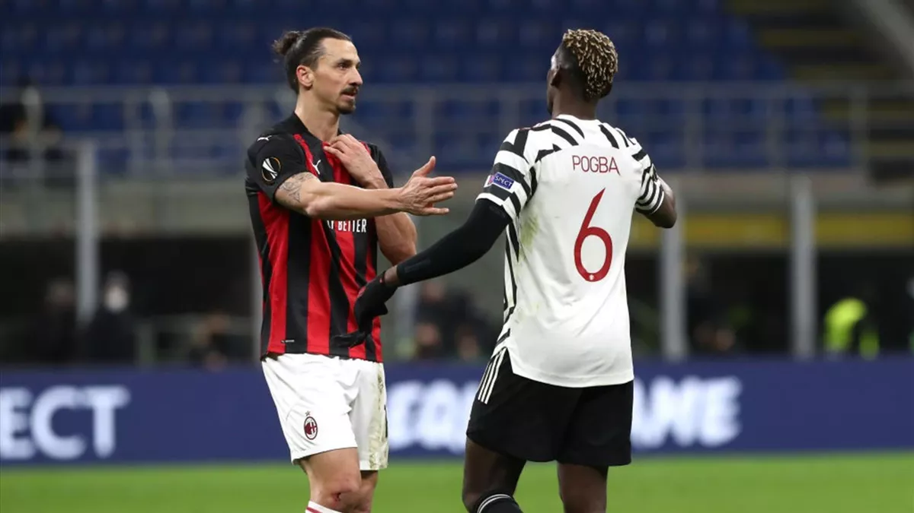AC MILAN-MANCHESTER UNITED (0-1) : ZLATAN IBRAHIMOVIC: "POGBA ? IL N'EST PAS FORT, IL EST TRÈS FORT"...
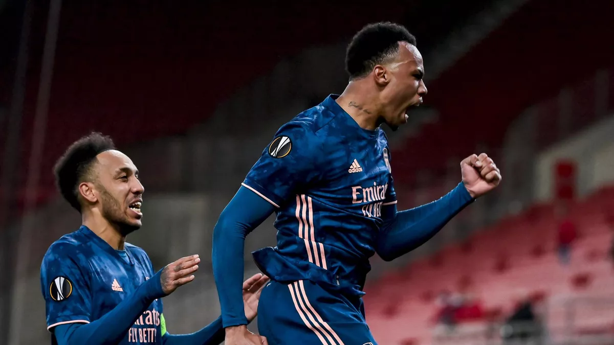LIGUE EUROPA : TOTTENHAM, LA ROMA ET L'AJAX EN MAÎTRISE, MONTAGNES RUSSES POUR ARSENAL
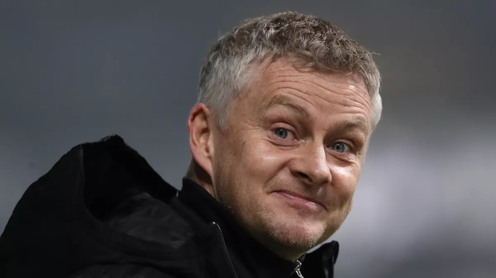MANCHESTER UNITED - AC MILAN : OLE GUNNAR SOLSKJAER, LE CONSCIENCIEUX ET MYSTÉRIEUX...
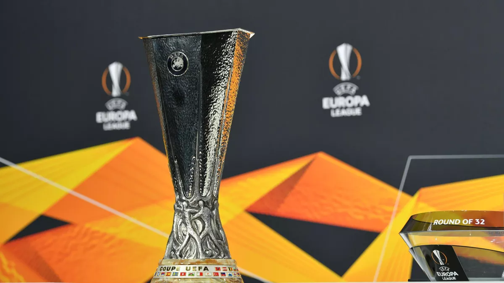UN CHOC MANCHESTER UNITED - AC MILAN, UNE REVANCHE POUR ARSENAL : LE TIRAGE AU SORT DES 8ES...
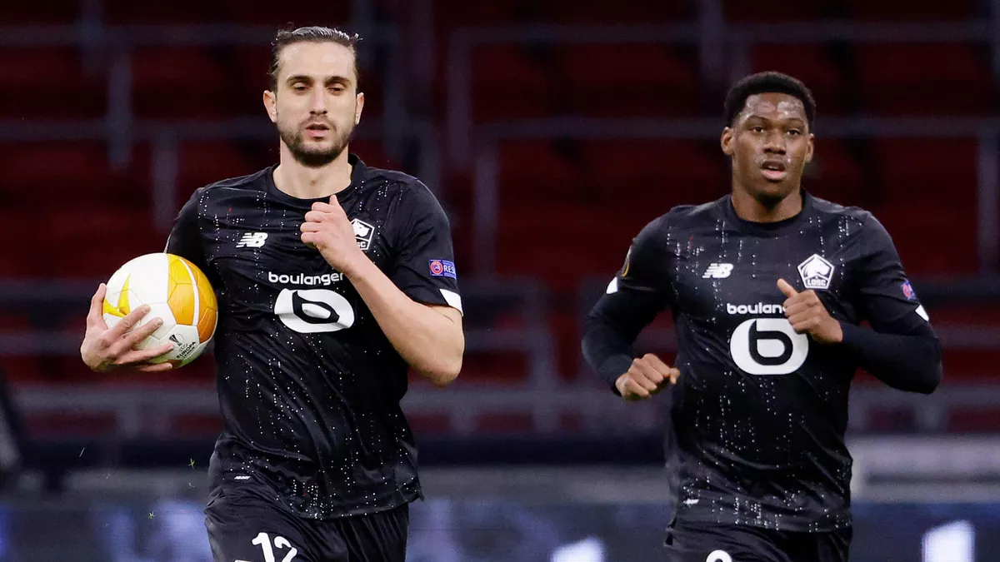APRÈS AJAX - LOSC : "RETENIR LES BONNES CHOSES POUR ALLER JUSQU'AU BOUT EN L1"
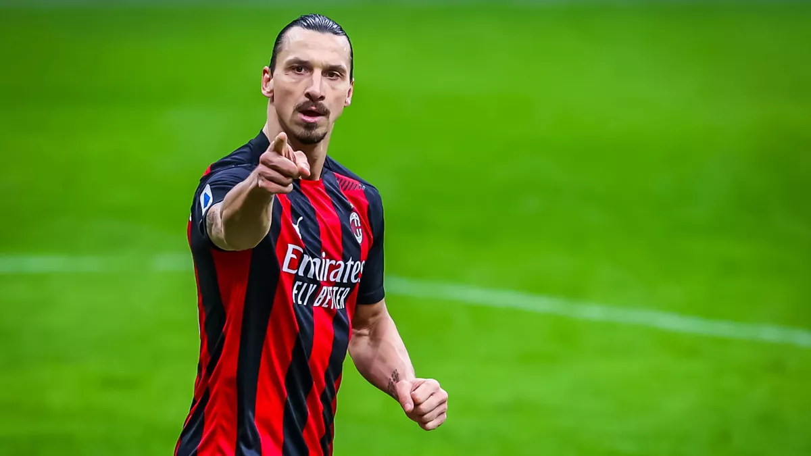ZLATAN IBRAHIMOVIC (MILAN AC) VISÉ PAR DES INSULTES RACISTES À BELGRADE LORS DU MATCH DE C3
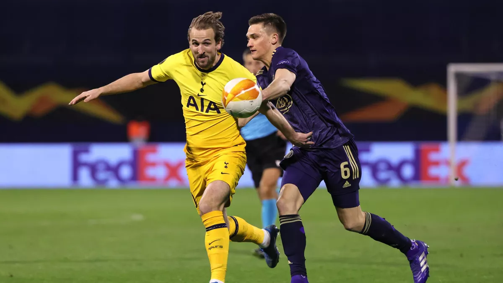TOTTENHAM ÉLIMINÉ À L'ISSUE DE LA PROLONGATION, ARSENAL BATTU MAIS QUALIFIÉ...
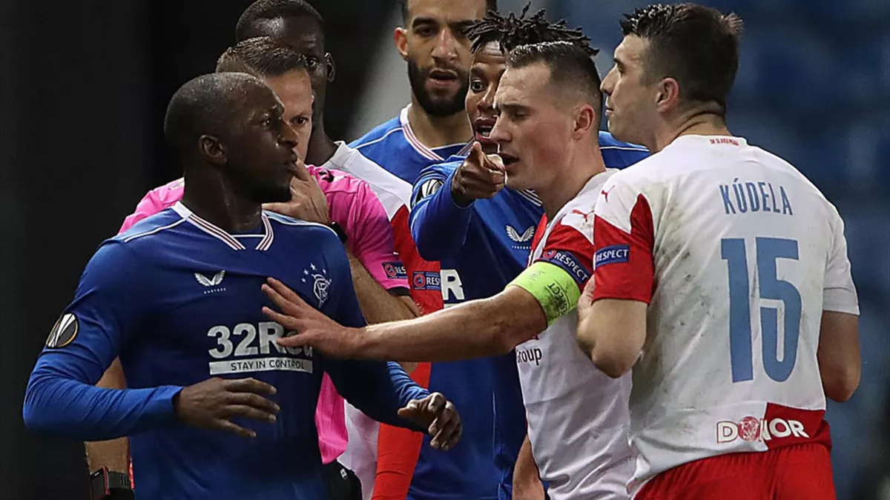LIGUE EUROPA : ACCUSATION DE RACISME LORS DE RANGERS-SLAVIA, L'UEFA ENQUÊTE, PLAINTE DÉPOSÉE